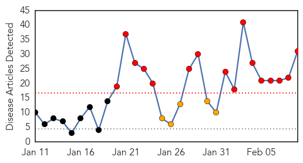
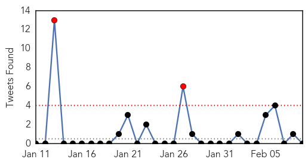

Swine Flu
30-Day Web Trend
16 alerts, 5 warnings

30-Day Twitter Trend
0 alerts, 0 warnings

Article Locations

Article Confidences

Top Articles:
- 1.000
- 42 swine flu cases in Mumbai so far, death toll at 5
- 0.999
- Hospitals on Alert After Recording 95 Cases of H1N1
- 0.999
- Swine flu epidemic hits Gujarat with 831 cases in just 40 days
- 0.999
- Seven new Swine flu deaths, toll 88
- 0.998
- Swine flu claims more lives in state
- 0.998
- No swine flu vaccine for NMC workers, GMCH staff
- 0.997
- the edge of knowledge
- 0.997
- Five More Succumb to Swine Flu in Gujrat; Death Toll Reaches 71
- 0.995
- Educational institutes in Bhopal issued H1N1 guidelines
- 0.994
- First Swine Flu Case in Himachal, 59-Year Woman Tests Positive
- 0.994
- Swine flu scare: 831 cases, 88 deaths in Gujarat
- 0.994
- One more case of swine flu detected in Thane
- 0.993
- Swine Flu Claims 42 Lives in Telangana Since Jan 1
- 0.992
- Swine flu death toll reaches 92 in Rajasthan
- 0.991
- Maharashtra on alert after spurt in H1N1 cases
- 0.991
- Eight more H1N1 deaths in Bhopal and Indore in last two days
- 0.977
- A(H1N1): Health Department’s directive to private hospitals
- 0.976
- Swine Flu deaths despite availability of vaccine- Business News
- 0.975
- Swine Flu Kills 9 in Karnataka; 50 New Cases Reported in Bengaluru
- 0.973
- Ruia Hospital nurse diagnosed with swine flu-like symptoms
- 0.970
- 7 more suspected swine flu cases in Agra
- 0.959
- Going viral, literally
- 0.957
- Khader Calls Meeting as H1N1 Deaths Touch 5
- 0.950
- Swine Flu Cases Surge to 40 in Lucknow
- 0.936
- Eight Swine Flu Deaths Out of 118 Cases in State So Far, Govt on Alert
- 0.935
- Swine flu toll climbs to 53 in Telangana
- 0.883
- Confidence in government may play key role in public's willingness to take swine flu vaccine
- 0.838
- Swine flu toll crosses 100 in Rajasthan
- 0.834
- Kids turned away from school on swine flue scare
- 0.753
- Confidence in government may play key role in public's willingness to take swine flu vaccine
- 0.638
- Plan for Hong Kong's own vaccine plant deserves full support
Top Tweets:
-
No tweets found for Feb 09, 2015
Unknown
30-Day Web Trend
0 alerts, 0 warnings

30-Day Twitter Trend
2 alerts, 0 warnings

Article Locations

Article Confidences

Top Articles:
- 0.986
- Hong Kong struggling with flu outbreak as death toll climbs, East Asia News & Top Stories
- 0.975
- Health Ministry expects high MERS cases in coming weeks
- 0.965
- Great shortage of flu vaccines
- 0.958
- Health Department testing more after school TB case
- 0.918
- Inland Bays, Atlantic Ocean, Rehoboth Beach, Lewes, Milton, Dewey Beach, USA
- 0.917
- Chicago Tribune
- 0.917
- Chicago Tribune
- 0.917
- Chicago Tribune
- 0.917
- Chicago Tribune
- 0.917
- Chicago Tribune
- 0.917
- Chicago Tribune
- 0.917
- Chicago Tribune
- 0.917
- Chicago Tribune
- 0.917
- Chicago Tribune
- 0.917
- Chicago Tribune
- 0.917
- Chicago Tribune
- 0.917
- Chicago Tribune
- 0.917
- Chicago Tribune
- 0.917
- Chicago Tribune
- 0.917
- Chicago Tribune
- 0.917
- Chicago Tribune
- 0.917
- Chicago Tribune
- 0.917
- Chicago Tribune
- 0.917
- Chicago Tribune
- 0.917
- Chicago Tribune
- 0.917
- Chicago Tribune
- 0.917
- Chicago Tribune
- 0.917
- Chicago Tribune
- 0.917
- Chicago Tribune
- 0.917
- Chicago Tribune
- 0.917
- Chicago Tribune
- 0.917
- Chicago Tribune
- 0.917
- Chicago Tribune
- 0.915
- Melbourne man contracts rare and potentially fatal Japanese encephalitis virus in Bali
- 0.900
- Tuberculosis case discovered at Beechview school
- 0.889
- 145 deaths this year as deadly flu bug hits Hong Kong, East Asia News & Top Stories
- 0.869
- Livestock strain of MRSA found in pigs in England
- 0.866
- Hooded gunmen fire on French police in Marseille -source
- 0.845
- UConn Students Hospitalized With Illnesses
- 0.823
- Cases of RSV reach epidemic levels in Louisiana
- 0.799
- WHO working with UN agencies on flood response in the former Yugoslav Republic of Macedonia
- 0.754
- Gov't should reconsider exporting medics to Trinidad
- 0.718
- Ministry provides free tetanus-diptheria shots
- 0.688
- Gomoa Brofo faces water shortage
- 0.676
- Little cherry virus checks reveal extent of disease
- 0.651
- H5N6 avian flu fatality in Yunnan
- 0.635
- UConn Hit With Outbreak Of Unknown Illness Involving Vomiting « CBS New York
- 0.612
- Homeless veteran settles Legionnaires' lawsuit against VA
- 0.608
- Deworm to not lose gains made on child health and nutrition
- 0.598
- Mugabe's fall shows he is alert
Showing top 50 articles...
Top Tweets:
- 0.802
- Recuerdo en kinder que me premiaron con un libro por ser el mejor de la clase que leía. @daphnelyanne Tu abuela fue.
- 0.798
- Recuerdo en 4to grado que fui el más rápido en las tablas de multiplicar de todos los salones del grado.
- 0.609
- RT: Malcolm Brenner, de 63 años, admite haber sido seducido por un delfín con el que mantuvo sexo durante más de un año. ht…
- 0.511
- Fact: You cannot get the flu from the flu vaccine. Learn more about vaccine facts and myths http://t.co/ZJowHzeqlA.